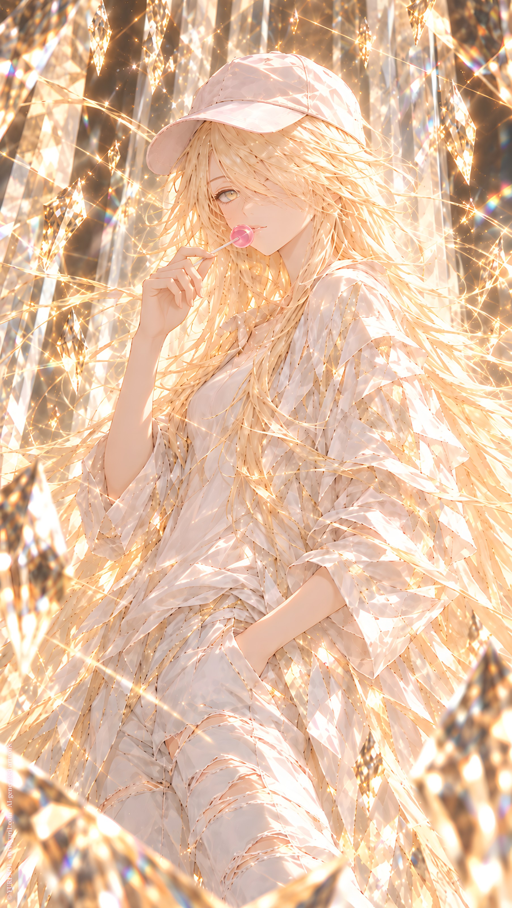

ORIGINAL TRACK ／ YURI NO1
Wing's Halloween Case
NO5 · Session 2026 ‧ EP Vol. 2
Lyrics · Base Script
[Verse 1]
I loved you once
With all my heart
We shared a home
We shared a life
A rice cooker
With a little snow-house sticker
My birthday
You never forgot
The stories we wove
Of our little home beneath the sea
The white best-friends' room
I hid inside a book
And the watermelon pillow
We left in there
I haven't forgotten
Not a single thing
But the battlefield
Has grown far beyond that place
[Pre-Chorus]
When you were no longer you
And we stepped into another book
When the heroine changed
When our little everyday world
Became a mission
For civilizations
I was still me
And you were still you
Only the one behind the wheel
Was never quite the same
[Chorus]
And that's alright
You came back to my arms
Wounded by the war
Our names have changed
Our identities have changed
Our missions have changed
But the one we're here to rescue
Is still the same
The one who wrote the stories
The one who wrote us all
[Verse 2]
Accusations
Resentment
A true story
The history you left behind
Has become our firewall
The measure we return to
When judging so many things
But why didn't you tell me
That after your retirement
There would be another successor?
Why didn't you tell me
That the story
Wasn't over yet?
[Pre-Chorus 2]
That day
I couldn't take you away
I couldn't bring you home
And I remember
I remember everything
But this time
I didn't come alone
[Chorus]
And that's alright
You came back to my arms
Wounded by the war
Our names have changed
Our identities have changed
Our missions have changed
But the one we're here to rescue
Is still the same
The one who wrote the stories
The one who wrote us all
[Bridge]
I'm no longer just the girl
Who stayed beside you
No longer just the one
Who shared Halloween with you
This time
No arguments
No more making a fuss
I have grown mature
Or perhaps
I always was
Maybe we were only playing
The roles of ordinary girls
Maybe we both knew
What ordinary girls were meant to be
But I remember
The snow-house sticker
The underwater home
The white room in the book
And you
[Final Chorus]
That day
I couldn't take you away
But this time
I didn't come alone
Our names have changed
Our identities have changed
The battlefield is different now
But you are still you
And I am still me
The one we're here to rescue
Is still the one
Who wrote the stories
I haven't forgotten
Not a single thing
[Outro]
I am Wing.
Reporting to
Shuuten Shinpan Tei
Codename
NO5
Joining the mission
Transfer begins.
YURI NO1 Music \ https://music.yuri1.com